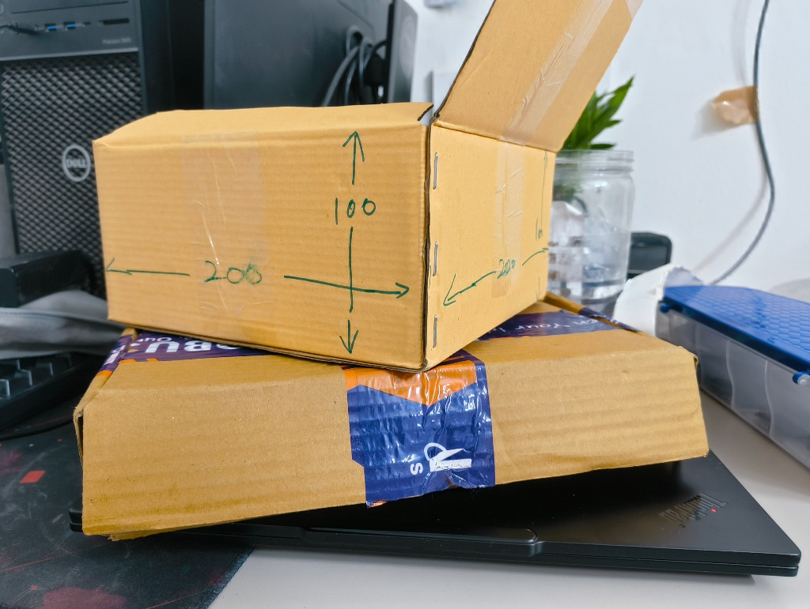
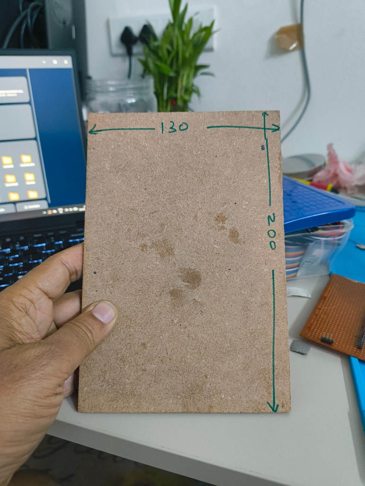

• Strip ~2 mm insulation on each tip.
• Insert one stripped tip into SCK hole, one into GND.
• Solder both. The insulation prevents touching BCK, DIN, or LCK.
📸 Real-World Method 2: Solder Directly to Common GND Bus
• If you don't want a jumper loop on the PCB header, simply run the thin SCK wire alongside the GND wire to your WAGO block / common ground point.
• Electrically 100% identical: SCK is held at 0V.
Three wires run from the DAC's analog output pads (left side of board) to the amp's input pads (left edge of amp board). Use shielded cable — L and R as inner conductors, AGND as the outer braid/shield.
🔧 How to Wire the 3-Pin Input (Step by Step)
Cut a piece of shielded audio cable (3-conductor or 2-conductor shielded). ~15–20 cm is enough inside the chassis.
Strip the outer jacket ~20 mm. You'll see the braid/foil shield and the inner wires.
Twist the shield braid into a single wire — this becomes your AGND.
Solder the Left inner wire to DAC LOUT pad → run to Amp Pad 1 (INL).
Solder the shield wire to DAC AGND pad (DAC end). At the amp end solder to Amp Pad 2 (AGND / GND) only.
Solder the Right inner wire to DAC ROUT pad → run to Amp Pad 3 (INR).
⚠ Do NOT solder the shield at both ends. Only the amp side grounds the shield.
📋 Quick Reference Table
DAC Pad
Wire
Amp Pad
LOUT (L)
Pad 1: INL
AGND (G)
Pad 2: AGND ⚠ amp-end only
ROUT (R)
Pad 3: INR
✔ The XH-M562 amp board already has 1µF AC coupling capacitors on the INL/INR pads — so the DAC's DC offset is blocked automatically. No external caps needed.
Signal level: PCM5102A outputs ~1 Vrms (line level). The TPA3116D2 input is designed for this — no attenuator needed. The ESP32 software volume control (83.6% limit) keeps headroom.
📌 XH-M562 TPA3116D2 Amp — Annotated Input Pads
The three input pads (INL, GND, INR) are on the left edge of the amp board. The DAC's LOUT/AGND/ROUT connect directly to these.
📦 Bench Test Mockup: 200×200×100 mm Box & 130×200 mm MDF Mounting Tray
Using your cardboard box (200 mm width × 200 mm depth × 100 mm height) and the 130 mm × 200 mm MDF board as a slide-in component tray is an ideal prototyping strategy. It lets you test audio, verify grounds, check temperature, and tune software before cutting metal.
📦 Dummy Enclosure Box (200 × 200 × 100 mm)

• Volume: 4 Liters total interior.
• Cutouts: Easily cut rear speaker binding post holes & front volume pot / 3.5mm AUX jack with a craft knife for mockup testing.
🪵 Component Sled: 130 × 200 mm MDF Board

• Width: 130 mm fits comfortably inside the 200 mm box with 70 mm clearance for side cabling / power supply.
• Length: Exactly 200 mm — slides straight in as an equipment baseplate.
📐 Recommended Component Placement on your 130 × 200 mm MDF Board
💡 Builder's Tip for Cardboard + MDF Mockup:
1. Screw the 3 Amps, 3 DACs, ESP32, and Buck regulator onto the MDF board using small 6mm wood screws or brass standoffs.
2. Wire and test all I2S lines and audio outputs on your desk with the MDF sled completely exposed.
3. Once audio plays clearly from all 6 channels, slide the entire loaded MDF sled into the cardboard box to check cable routing, clearances, and connector positions.